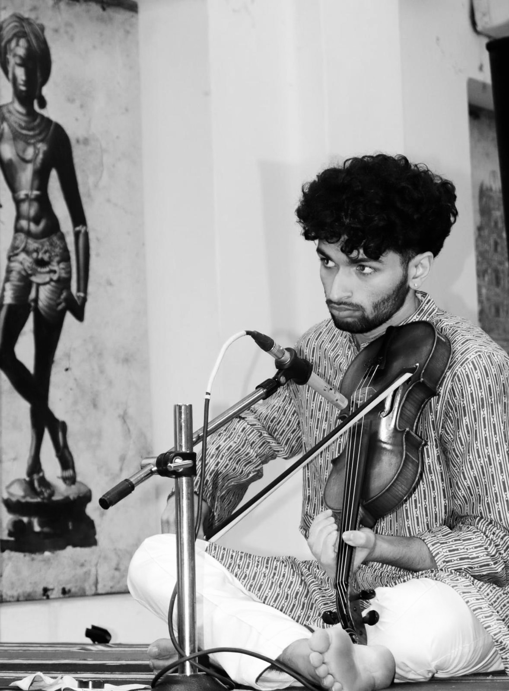

Carnatic Music
Carnatic violinist and accompanist to frontline artists across India and the US. Disciple of Sangeet Samrat Chitravina N Ravikiran.
Bio & Training

Disciple of Sangeet Samrat Chitravina N Ravikiran since 2012, trained initially under his mother Vanitha Suresh and Violinist Shri C N Srinivasa Murthy.
Since his maiden concert as a soloist and accompanist to Shri Sikkil Gurucharan in July 2017, Sanjay has graduated into a sought-after accompanist, supporting frontline artists including Smt Alamelu Mani, Shri Chitravina N Ravikiran, Shri Raghavachary Dharuri, Dr. Rama Ravi, Dr. S Sowmya, Carnatica Brothers, Dr Gayathri Girish, Shri Palghat Ramprasad, Shri Sikkil Gurucharan, Akkarai Sisters, and Shri KS Vishnudev in major festivals and venues in India & the US, sharing the stage with legends such as Shri V V Subrahmanyam, Shri Trichy Sankaran, Shri Srimushnam Raja Rao, Shri Tiruvarur Bhakthavatsalam & Shri Patri Sathish Kumar.
He has also presented solos and duos with his brother Arjun Suresh (Chitravina), as well as orchestral Melharmony concerts with his guru Ravikiran (whom he has also assisted in arranging some of the pieces).
Concerts
Upcoming
Anirudh Raja
Cleveland Thyagaraja Festival · 10 PM
Malladi Suribabu
Pittsburgh
Malladi Suribabu
Dayton, Ohio
Akshay Padmanabhan
Chicago
2025/26 Chennai Music Season
Chitravina N Ravikiran
Arkay Convention Centre · 6:30 PM
TVS Mahadevan
Narada Gana Sabha · 10 AM
Duet with C S Chinmayi
Velleeshwarar Kovil · 6 AM
Sankari Krishnan
Chennai Fine Arts · 9:30 AM
K Gayatri
GFA · 5–7 PM
Rama Ravi
GFA · 10:20–11:50 AM
Chitravina N Ravikiran
Neelakantan Sivan Cultural Trust, Nanganallur
Carnatica Brothers
6:30 PM
Akkarai Sisters
Neelakantan Sivan Academy · TBD
Melharmony Concert
Brahma Gana Sabha · 6:30 PM
KS Vishnudev & Trichy Sankaran
Srirangam
Chitravina N Ravikiran
Kalady, Kerala
2026 — US Tour
Carnatica Brothers
Minnesota
Carnatica Brothers
Tampa, Florida
Carnatica Brothers
Chicago
Media
Sanjay is a member of Naturosynth, a band that recently toured Los Angeles, New York, and Chicago.
Booking & Contact
For concert bookings and collaborations, reach out by Email →